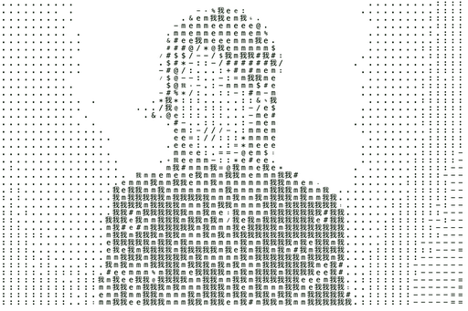
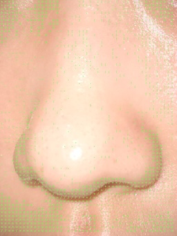

▓ ▓ ▓▓▓ ▓▓▓▓▓ ▓▓▓ ▓ ▓ ▓▓▓ ▓ ▓ ▓ ▓ ▓
▓ ▓ ░▓ ░░▓ ░▓░░░▓ ░░▓ ▓▓ ▓░▓ ░░░ ▓░ ▓ ▓ ░▓░ ▓░
▓ ░ ▓▓▓▓▓░ ▓░░░▓░ ░▓░▓░▓ ▓░▓░ ▓▓░ ▓░░ ▓ ░ ▓░░ ▓░░
▓░ ░▓░░░▓░░ ▓░░ ▓░░ ▓░▓░░▓▓░▓░░ ▓░ ▓░░ ▓░ ░▓░░ ▓░░
▓░░ ▓░░░▓░░ ▓░░ ▓▓▓ ░▓░░ ▓░░▓▓▓ ░░ ▓▓▓▓▓ ▓░░ ▓▓▓ ░░
░░ ░░ ░░ ░░ ░░░ ░░░ ░░ ░░░ ░ ░░░░░ ░░ ░░░ ░
░ ░ ░ ░ ░░░ ░ ░ ░░░ ░░░░░ ░ ░░░
I am fluid 
